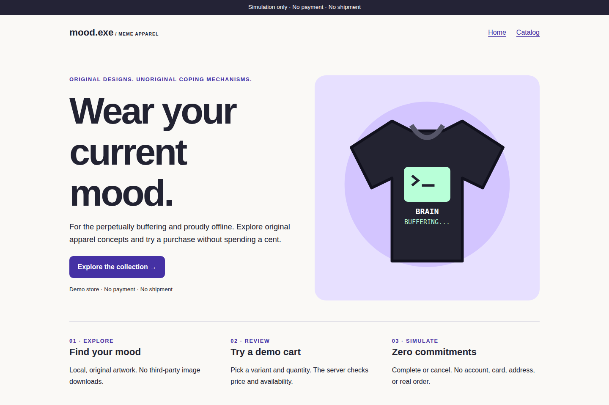
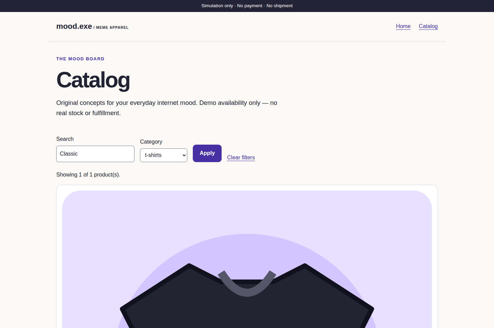
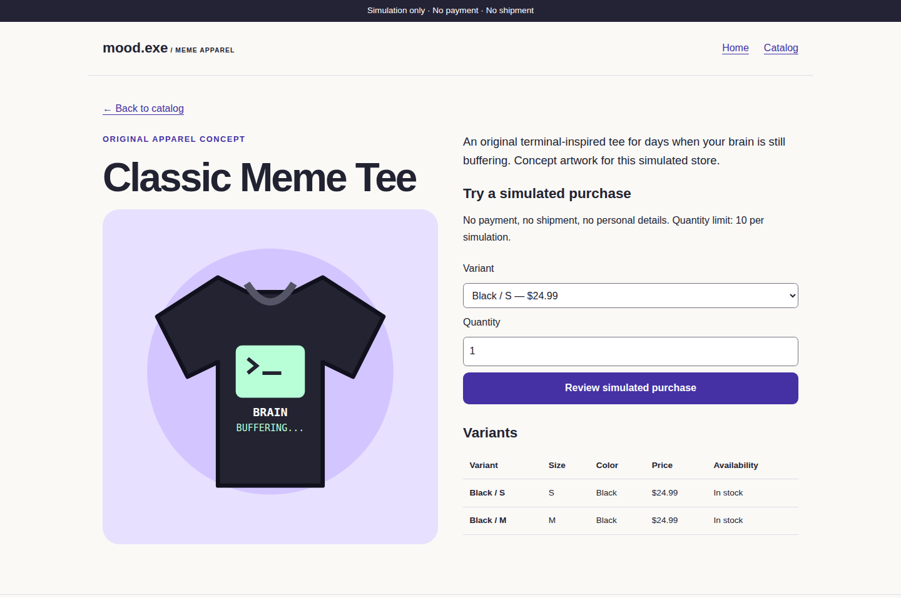
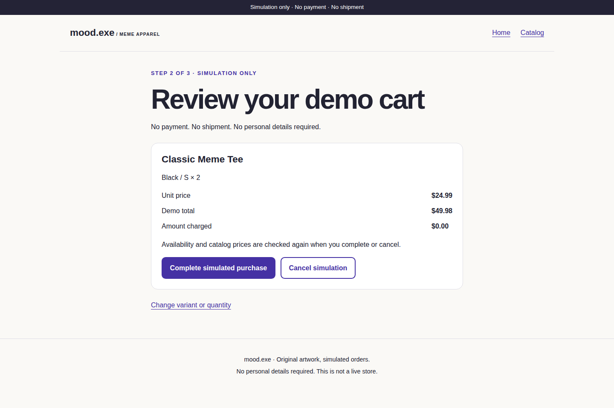
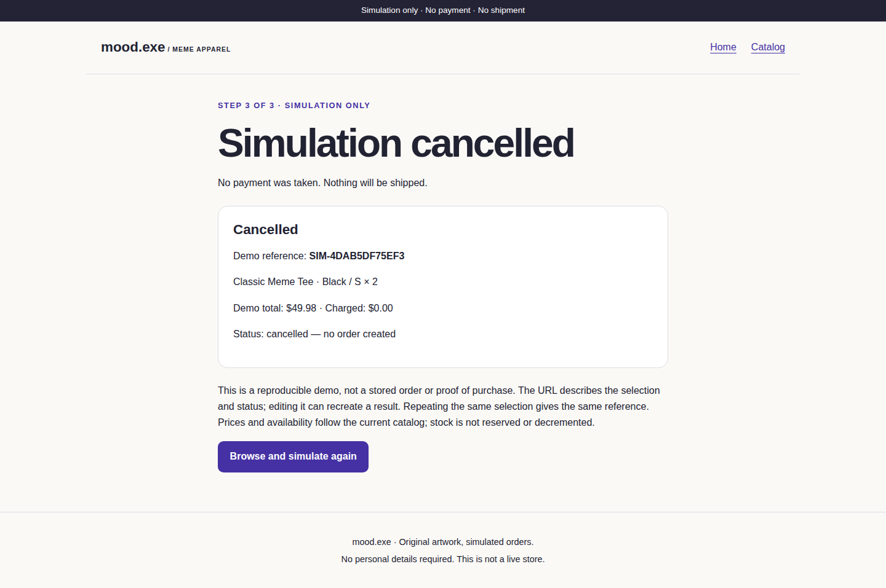
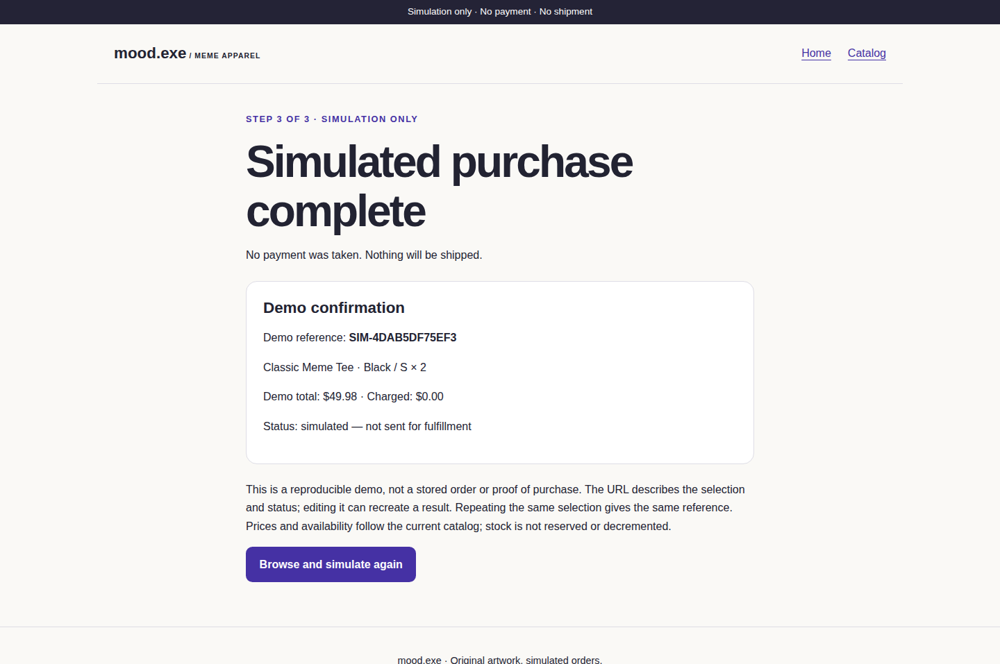
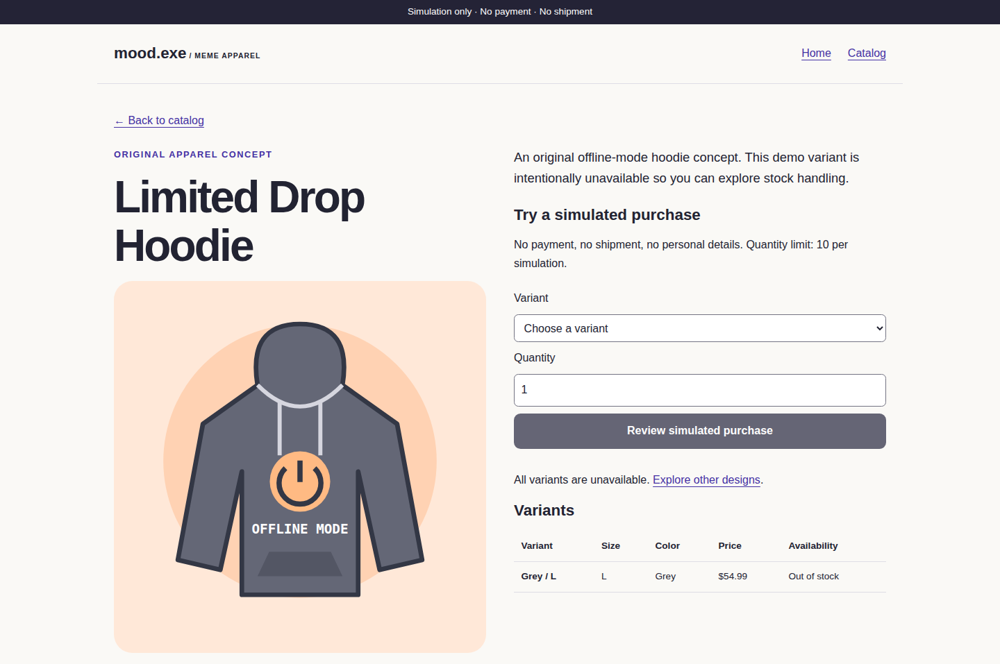
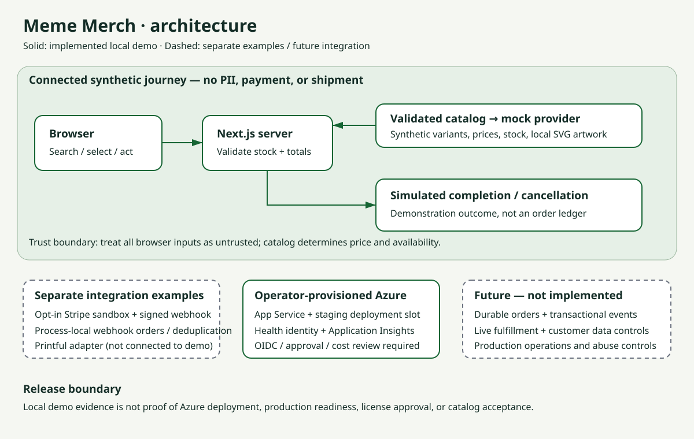

Presenter backup · synthetic data · local browser captures
From merchandise discovery to a simulated outcome
This is a captioned screenshot walkthrough, not a video recording or proof of deployment.
No payment, shipment, or customer data is involved. Catalog listing and redistribution remain subject to owner approval.

1. Set the context. Retail teams can evaluate a merchandise journey before investing in live integrations.
Explain that this demonstration is synthetic and requires no credentials.

2. Find relevant merchandise. Search and filtering connect shopper intent to catalog context.
The sample tee has available variants; the hoodie provides an unavailable-stock scenario.

3. Select a variant. Inspect original local artwork, price, and availability.
Select an available tee variant and quantity two.

4. Review the intended action. The server uses catalog prices and stock.
Two sample tees total USD 49.98; the charged amount is zero. No tax or delivery quotation is implied.

5. Cancel safely. The cancellation outcome is not a successful sale.
Return to the catalog to begin another selection.

6. Complete the simulation. A deterministic reference and synthetic status make the outcome concrete.
The URL describes this reproducible scenario; it is not a stored order or proof of purchase.

7. Show a boundary. Unavailable stock cannot proceed through review.
Discuss where real inventory authority and reservation would belong.

8. Agree on the next action. Select one campaign, name business and engineering owners,
and agree on a bounded pilot. Durable orders, live integrations, security/privacy review, licensing,
and independent operational evidence remain separate decisions.